A template repo and reference guide for building AI agent systems with OpenCode. Learn how to structure multi-agent teams that plan, implement, test, document, and ship software — entirely through GitHub Issues.

| Category | Description | Examples |
|---|---|---|
| Domain | Own specific directories. Full read/write/bash access. | @vault-core, @tui |
| Advisory | Read-only reviewers. Never modify code. | @security, @architecture |
| Cross-cutting | Handle concerns that span all domains. | @test, @document, @release |
your-repo/
├── CLAUDE.md # Project context for every agent
├── .opencode/
│ ├── agents/ # Agent definitions
│ │ ├── engineering-lead.md # Primary orchestrator
│ │ ├── vault-core.md # Domain agent
│ │ ├── security.md # Advisory agent
│ │ ├── test.md # Cross-cutting agent
│ │ ├── document.md # Cross-cutting agent
│ │ └── release.md # Cross-cutting agent
│ └── commands/ # Custom slash commandsgit clone https://github.com/rmkohlman/opencode-agents.git
cd opencode-agents
# Copy .opencode/ to your projectHigh relevance — Shows how to structure multi-agent teams with OpenCode.
cloned-repos/opencode-agents/